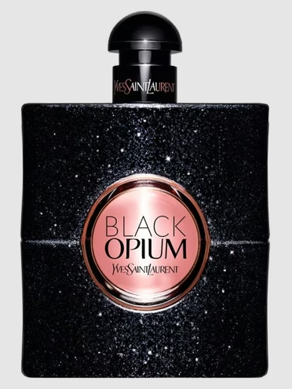

Black Opium is a beloved coffee-inspired fragrance by Dior, introduced in 2015. It features a blend of coffee, vanilla, and tonka bean as top notes, followed by sandalwood, musk, and patchouli in the heart, and vanilla, amber, and vetiver in the base. This fragrance is known for its sweet, warm scent that evokes the richness of a perfect cup of coffee, making it a popular choice for both men and women. The iconic bottle design, featuring a minimalist aesthetic with a distinctive coffee bean motif, symbolizes the fragrance's unique character and has become synonymous with sophistication and indulgence.